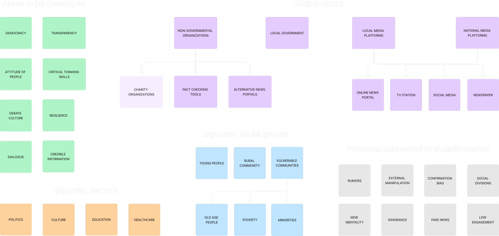
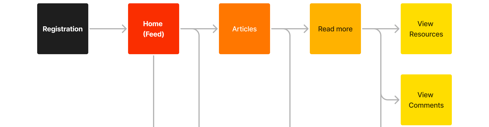
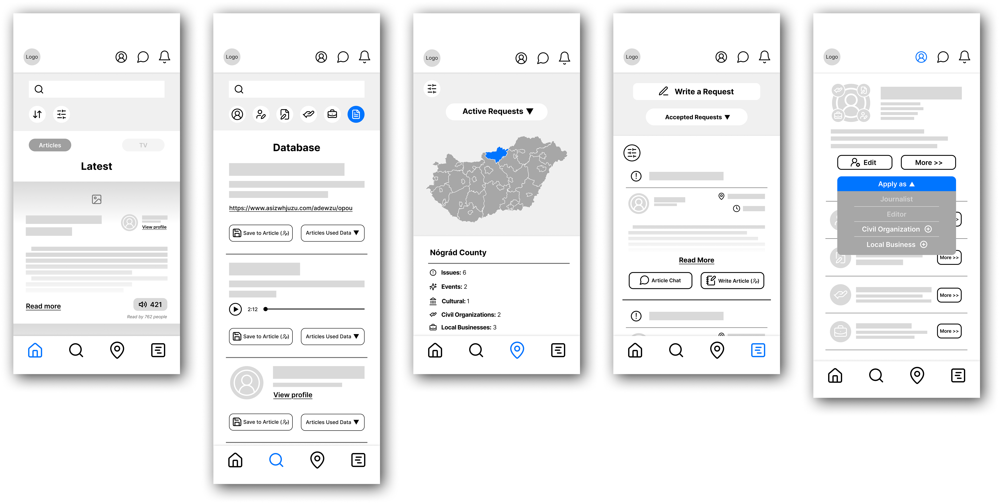

The Project
For this project, we were given four issues, that are common in the rural area of Hungary, and we had to make a concept of a digital tool, that can help solving it.
I chose misinformation for my intervention area. I started to investigate, how I, as a designer can help to improve access to reliable information in rural communities to combat fake and biased news sources and strengthen civic participation.
The Ideation
Ecosystem Map
Problems and Solutions
Concepts
1
A collective news portal, that shows how biased and reliable each article is, designed for digital kiosks.
2
Social media platform for sharing news, where users can rate articles based on partiality and credibility.
3
News platform, where the users can work as journalists, and readers can give topic requests for them to cover.
The Research (Qualitive)
Interviews
Péter Szira
Journalist, editor, editor in chief (Népsport, Mai Nap, Élet és Irodalom, National Geographic, Oktogon)
Judit Vadas
Editorial assistant, editor, deputy editor in chief (Sanoma Media, National Geographic, Spektrum Magazin)
Findings
1
Agencies rather hire journalists based on their experiences and test writings than their qualifications.
2
The amount of job opportunities is not the main problem for journalists, rather the lack of financial structure to support agencies.
3
Articles are checked by the editors and 3 independent informants, who are the interviewees or any professional in the topic.
The Progress
Service Blueprint
IA Mapping
Low/Mid-Fidelity Wireframing
The Result
My final concept was a newsportal app focusing on local communities in the rural area of Hungary, where people can not only read the news, but also able to give topic and story advices for the journalists to cover.
Readers can also apply here as a journalist, if they meet the strict requiremenst of the platform. If they are hired they can start to work on their articles, which is also checked by the informants and the editors. Therefore, this app would still let the information spread freely by independent people, while it is still filtered, and readers can also feel invested, by giving the stories, and also being able to get an insight into the researching and writing process to the article.
Read the articles and spread them
Write a topic request for the journalists
Find a request of a story to cover as a journalist
Accept one of that topics to write about
Manage your requests and articles
The Redesign
In 2025, I took a course called "Systemic Interface Design," where we studied in depth the fundamentals of creating logically structured responsive and modern prototypes. My main project during the course was to redesign this concept to create a version that was both aesthetically and technically relevant.